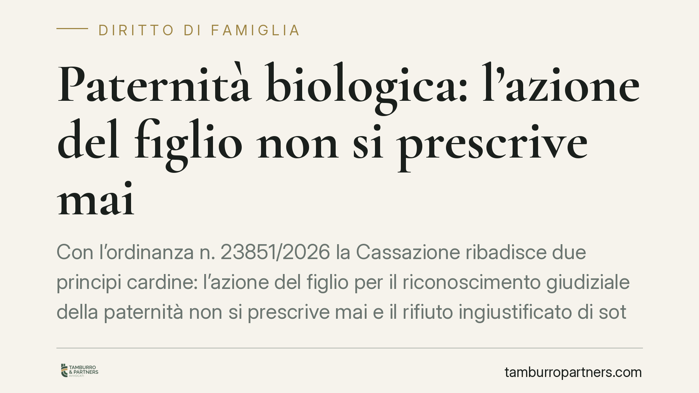

Paternità biologica: l'azione del figlio non si prescrive mai
Con l'ordinanza n. 23851/2026 la Cassazione ribadisce due principi cardine: l'azione del figlio per il riconoscimento giudiziale della paternità non si prescrive mai e il rifiuto ingiustificato di sottoporsi al test del DNA può essere valutato dal giudice come elemento di prova contro chi lo oppone. Un chiarimento che pesa sia sul piano dei diritti sia sulle strategie processuali.

Il caso e la decisione
La Corte di Cassazione è tornata su un tema ricorrente nel diritto di famiglia: i limiti temporali e probatori dell'azione con cui un figlio chiede al giudice di accertare chi è il proprio genitore biologico.
Con l'ordinanza n. 23851/2026 i giudici hanno confermato un orientamento consolidato. Da un lato, l'azione per la dichiarazione giudiziale di paternità (l'atto con cui si chiede al tribunale di riconoscere formalmente un legame di filiazione mai stabilito volontariamente) è imprescrittibile quando è esercitata dal figlio: non esiste un termine oltre il quale il diritto si estingue. Dall'altro, il rifiuto ingiustificato di sottoporsi al test del DNA costituisce un elemento che il giudice può valutare a sostegno della domanda.
Inquadramento normativo
L'imprescrittibilità dell'azione a favore del figlio è prevista dall'articolo 270 del Codice civile. Si tratta di una scelta precisa del legislatore: il diritto a conoscere e a veder riconosciuta la propria discendenza biologica attiene allo status della persona e alla sua identità, beni che non tollerano decadenze legate al semplice trascorrere del tempo.
Sul versante probatorio entra in gioco l'articolo 116 del Codice di procedura civile, che consente al giudice di trarre "argomenti di prova" dal contegno delle parti nel processo. Il rifiuto di eseguire l'esame ematologico rientra pienamente in questa previsione. Non si tratta di una prova automatica della paternità: il diniego, però, se privo di ragioni serie, viene letto come un comportamento significativo e si combina con gli altri elementi raccolti (testimonianze, documenti, relazioni personali) per orientare la decisione.
È importante distinguere. Il figlio non può essere costretto fisicamente al prelievo, così come non può esserlo il presunto padre. Ma la libertà di rifiutare non è priva di conseguenze processuali: chi si sottrae senza motivo assume il rischio che quel silenzio parli contro di lui.
Cosa cambia per chi è coinvolto
Per il figlio che intende far accertare la propria origine, la pronuncia conferma che non esistono scadenze da temere. L'azione può essere promossa anche a distanza di molti anni, senza che il presunto padre possa eccepire la prescrizione.
Per il presunto padre biologico, il messaggio è altrettanto chiaro. Opporsi al test confidando nell'assenza di prove dirette è una strategia fragile. Il rifiuto non blocca il processo: lo espone al rischio di una valutazione sfavorevole. Se esistono ragioni concrete per contestare la domanda, vanno portate nel merito, non affidate al silenzio.
Vi è poi un profilo spesso trascurato: la dichiarazione giudiziale di paternità produce effetti che vanno oltre lo status. Genera obblighi di mantenimento, incide sui diritti successori e può fondare richieste economiche anche per il periodo pregresso. Le conseguenze patrimoniali, quindi, non seguono la stessa regola dell'imprescrittibilità dell'azione principale e vanno esaminate caso per caso.
Cosa fare in concreto
- Raccogliete la documentazione prima di agire o difendervi: fotografie, corrispondenza, testimonianze e ogni elemento che colleghi le persone coinvolte. Il test del DNA è centrale, ma il quadro indiziario resta decisivo.
- Non ignorate la convocazione al test. Se ricevete un ordine del giudice, valutate con un legale le conseguenze di un rifiuto: quasi mai sottrarsi conviene.
- Distinguete azione e domande economiche. Verificate con un professionista quali richieste patrimoniali sono ancora esperibili e con quali limiti temporali.
- Muovetevi con tempestività anche se l'azione non scade: la reperibilità dei testimoni e la conservazione delle prove peggiorano con il passare degli anni.
- Valutate l'impatto sui rapporti familiari e successori prima di avviare il giudizio, così da agire con piena consapevolezza degli effetti.
La decisione conferma un equilibrio: massima tutela del diritto all'identità del figlio, senza automatismi probatori a carico di chi viene chiamato in causa. È il contegno processuale, non un termine di legge, a fare spesso la differenza.
---
*Contributo informativo a cura di Tamburro & Partners - Avv. Giuseppe Tamburro. Non costituisce parere legale.*
Ogni famiglia ha il suo equilibrio.
Separazione, divorzio, affidamento, assegno: se vuoi un confronto riservato su una specifica situazione, scrivi allo studio. Ti rispondiamo entro un giorno lavorativo.